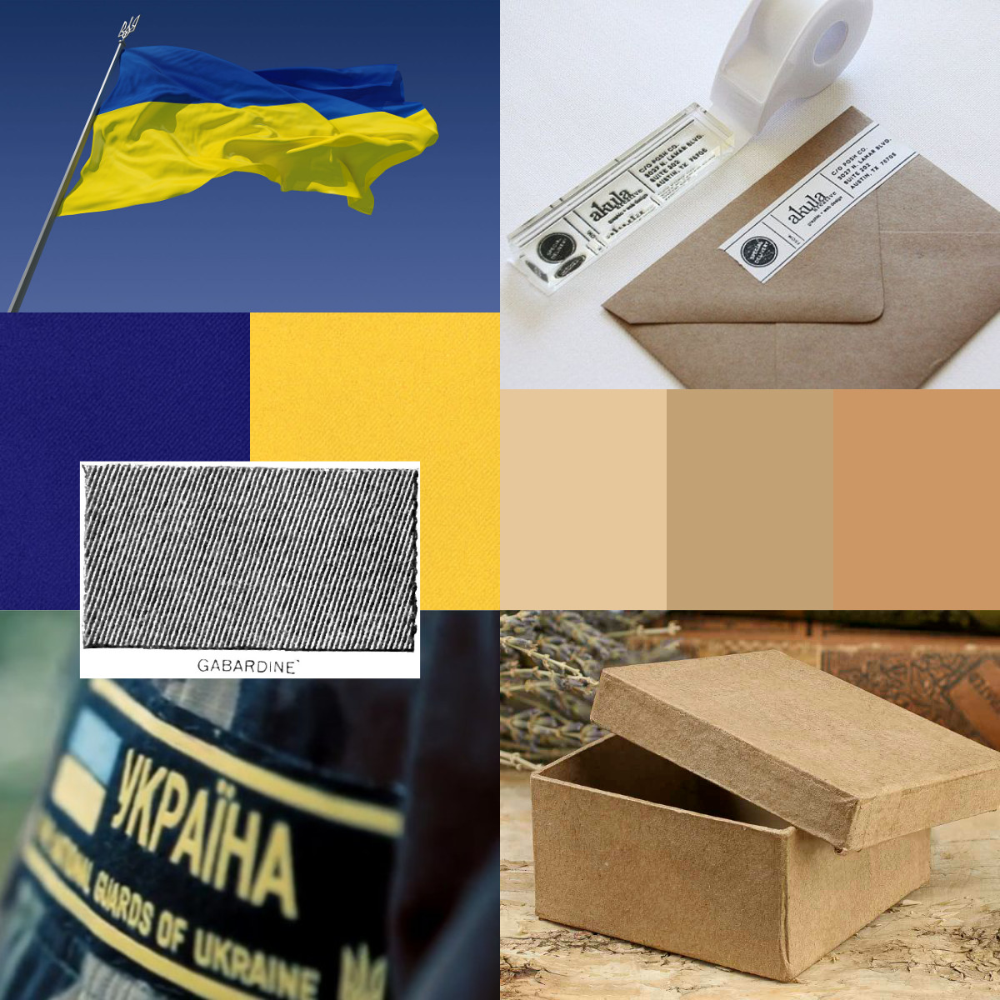
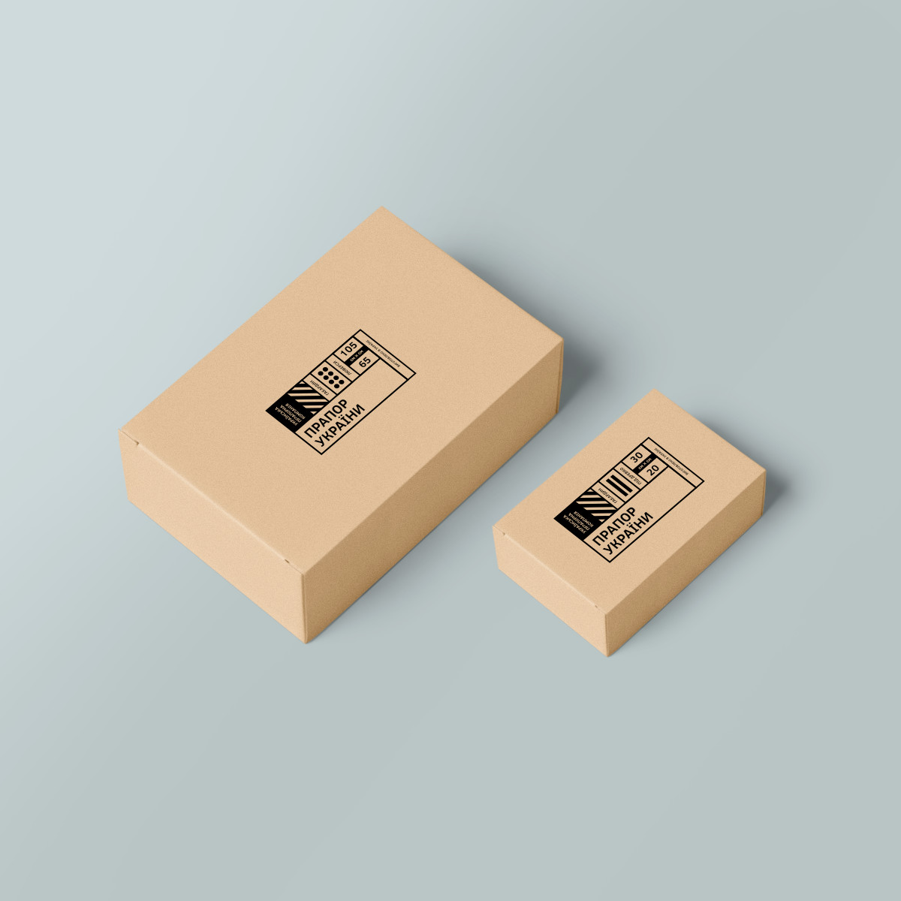
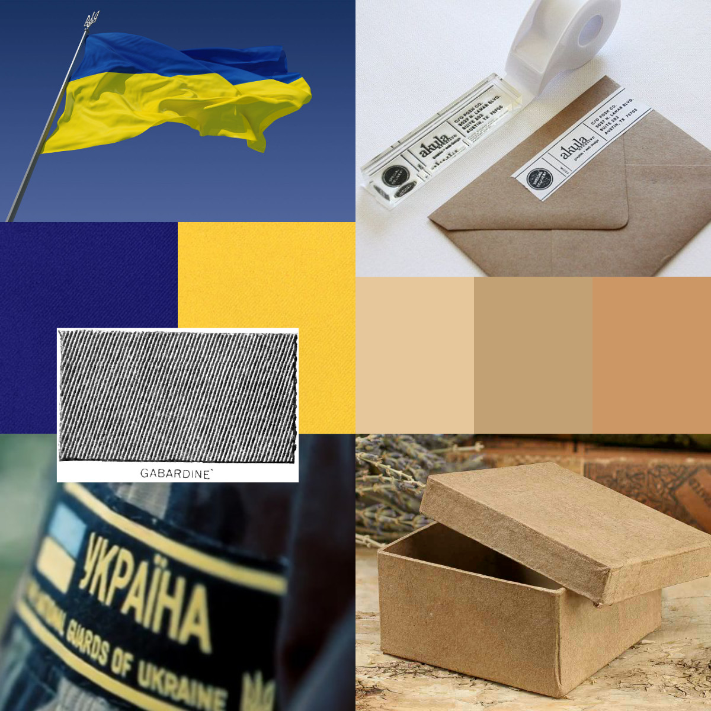
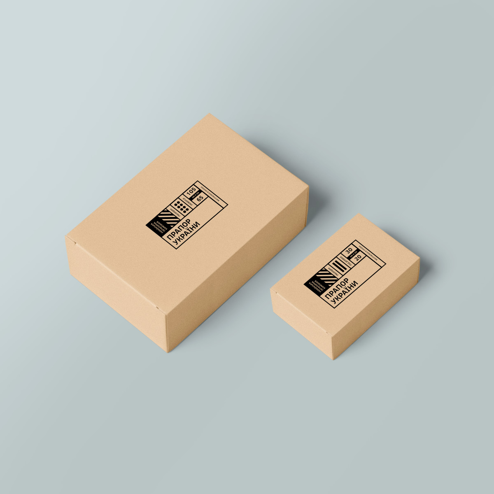

Branding for Ukrainian Flag Company
Ukrainian Flag Company is a flag producer that supports pro-Ukrainian social initiatives and helps war veterans.
Details
The company doesn’t have production capacities to compete with old, well-established factories. Yet, the market category doesn’t have companies with strong brands. Old companies rely on the existing connections formed in USSR.
Instead, they need to focus on delivering a few essential products. Initially, they will sell only flags of Ukraine, squeezing the old factories out of this market niche.
The visual style of the brand relies on rich colors, typography and layouts. However, the visual techniques are very modest. The identity suggests high price range of products. Yet, it doesn’t target snobs and hipsters specifically.
The style is inspired by the materials used in the process of producing and distributing flags. High-quality gabardine is at the core of the product and the identity.
 


